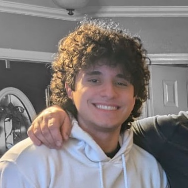

Hey, my name is Oscar! I am currently a Senior student at The University of Texas at Dallas in the Erik Jonsson School of Engineering and Computer Science working towards my bachelor's degree in Computer Science as well as a certificate in Data Science. Academically, I am interested in researching Artificial Intelligence and Computer Vision and will start researching those topics in the Spring 2025 semester. My overarching goal for my professional career is to pursue software development to create reliable and robust software that others can depend on.
I made this website to compile some of my old projects and to motivate myself to create more. Feel free to check out some of my projects in the navigation bar at the top of the webpage!

Oscar Ruenes Campos
About me

My parents, Sergio Ruenes Monraz and Aide Campos, had me and my brother, Sergio Ruenes Campos, in Mexico. When I was just three years old, we moved to the United States in 2009 in pursuit of better education and jobs for me and Sergio. From my perspective, we succeeded in living good lives in the United States as we all made many great friends, had financial stability, and were successful in achieving many of our personal goals. With the help of some merit-based scholarships that me and my brother earned, my parents were able to put me and my brother through college. As a family, we mostly enjoy spending time together whilst playing a game of poker.

These are my two cats Sandy and Ash :).

Last updated January 2, 2025.